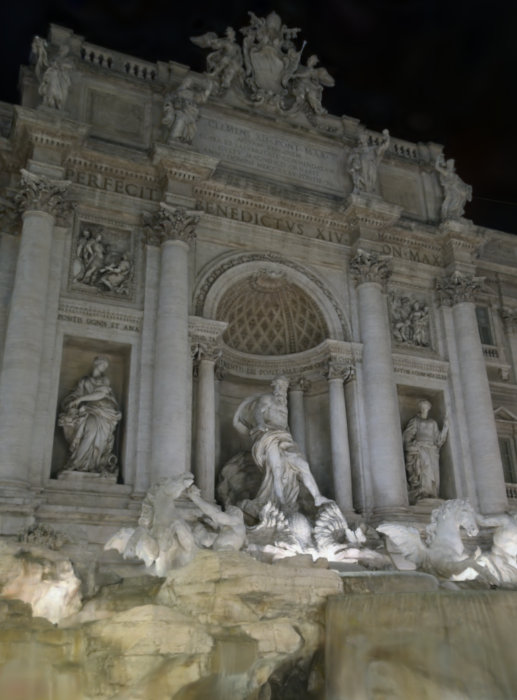

Research project · 3D Gaussian Splatting
Perceptual Surface Units
for Gaussians in the Wild.
A surface-structured framework that organizes stable appearance across views while accounting for observation-dependent illumination, visibility, and camera response.

Abstract
Stable surfaces.
Unstable observations.
Internet photo collections contain dramatic variation in illumination, exposure, camera response, and transient occlusion. PSU-GS introduces cross-view perceptual surface units as structural priors for appearance modeling. Fine-grained surface relations are transferred to Gaussian primitives through probabilistic association, improving local consistency and detail while enabling continuous, region-aware scene editing.
Method at a glance
From observations
to surface structure.
PSUD combines regional appearance and 3D geometric consistency to establish cross-view surface relations. These priors guide Gaussian appearance modeling while observation-dependent illumination and light-path visibility remain explicit.
- 01DecomposeDiscover perceptual surface units across views.
- 02AssociateTransfer surface priors to Gaussian primitives probabilistically.
- 03Render & editPreserve detail and expose controllable appearance factors.
Rendering comparison · 6 selected views
Where the difference becomes visible.
Drag the divider to compare WildGaussians with PSU-GS at the same camera pose. Every image is shown in full.
↔ drag to reveal
Interactive scene editor
Edit appearance, keep structure.
Choose a scene, then edit illumination or lock one audited perceptual surface unit and inspect its physical material response.
Full-frame frozen-model renders; fine substeps interpolate between the nearest anchors.
Illumination edit
Interpolate between two learned observation appearances while preserving camera pose and scene geometry.
Source lightΔ 0.011.00
Target light
Material region edit
Select and lock a regionTurn on Selection, then click a colored mask.
Reducedt · Δ 0.01+1.00
Enhanced
Visual atlas · 12 examples
Three places. Many appearances.
Real project outputs spanning baseline comparison, illumination endpoints, and fine-grained material selections.
Citation
Build on surface structure.
@article{liao2026psugs,
title = {PSU-GS: Perceptual Surface Unit Guided Gaussian Splatting for In-the-Wild Reconstruction},
author = {Liao, Liang and Jin, Jierui and Liu, Tengfei and Yan, Weiqing and Zhou, Wujie and Hu, Ruimin},
year = {2026}
}